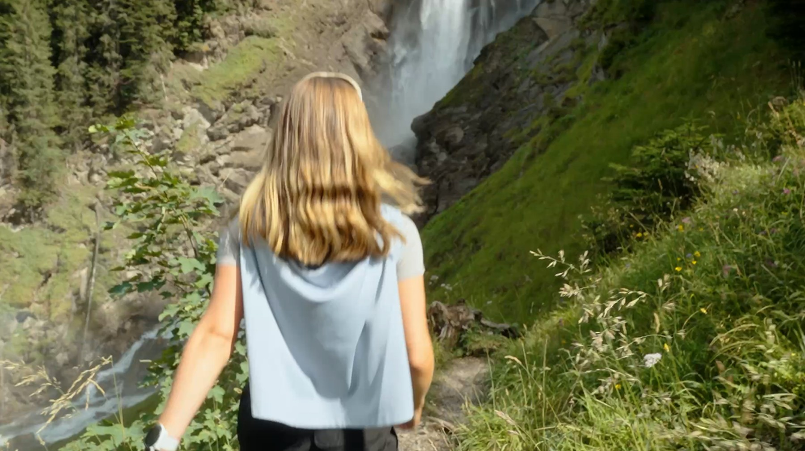

Franjo × Redbull × KTM
Skipiste, Spike-Reifen und ein Kindheitsfreund: ein Tag mit Franjo von Allmen und seiner KTM an der Lenk.
Das Projekt
Wenn Ski auf Motocross trifft
Franjo von Allmen holte an den Olympischen Winterspielen 2026 in Mailand-Cortina gleich drei Goldmedaillen — Abfahrt, Super-G und Team-Kombination. Wenn er nicht auf der Piste steht, schwingt er sich am liebsten aufs Motocross-Bike. Für sein eigenes Social Media durfte er mit seinem Kindheitsfreund Kevin und dessen KTM mit Spike-Reifen auf der Skipiste an der Lenk herumdüsen.
Wir haben die beiden dabei begleitet, wie sie sich mit dem Bike die Piste hochziehen liessen, Slalom zwischen den Torstangen fuhren und gemeinsam auf dem Cross die Hänge genossen. Daraus entstanden ein Behind-the-Scenes-Video und ein actiongeladener Reel für Franjos Social-Media-Kanäle.


Die Reels
Ski trifft Motocross
Zwei kurze Videos vom Tag an der Lenk — einmal Behind-the-Scenes, einmal der Action-Reel.
Leistungen im Detail
Was wir geliefert haben
 ← Vorheriges Projekt
Swiss-Ski — Junior World Championships
← Vorheriges Projekt
Swiss-Ski — Junior World Championships

Nächstes Projekt → Lenk Simmental Tourismus — Wander Kampagne